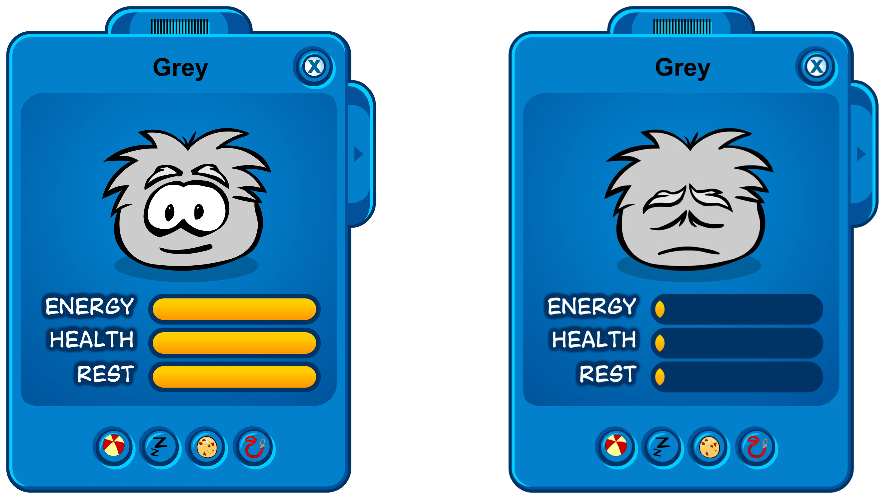

PUFFLE GRIS
Panel de estado

Su descubrimiento fue reciente siendo que su presencia ha estado hace vastante tiempo atrás. Esto debido a que esta especie de Puffles se encentraban atrapados en las estatuas del Dojo en la Isla, siendo liberados cuando los duraznos de la Isla florecieron.
- Fandom, (s.f.) "Puffle Gris". Club Pengüin Wikihttps://clubpenguin.fandom.com/es/wiki/Puffle_Gris?so=search